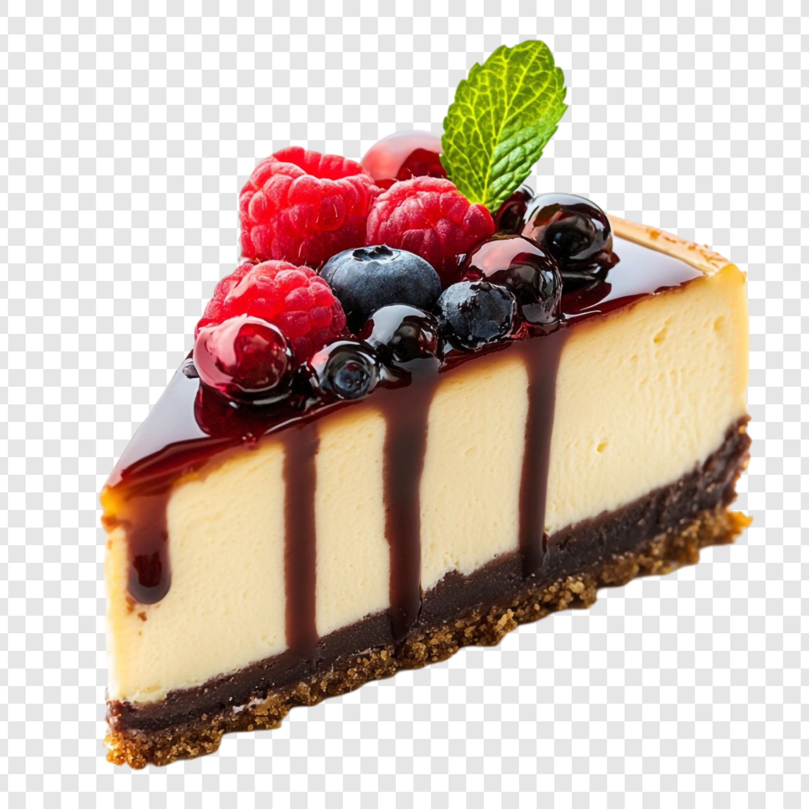

Cheesecake
Home

Cheesecake is a dessert made from a creamy mixture of soft cheese, eggs, and sugar on a crust, often made from crushed cookies.
Ingredients
- Crumbs
- Butter
- Sugar
- Cream cheese
- Vanilla extract
- Eggs
- Sour cream
- Salt
- Lemon zest or juice
- cornstarch
Steps
- Preparation
- Bring ingredients to room temperature
- Preheat the oven: 160-175°C
- Crust
- Combine ingredients for crust: In a bowl, mix the graham cracker crumbs, melted butter, and sugar until the mixture resembles wet sand
- Press into the pan
- Pre-bake
- Filling
- Beat the cream cheese
- Add sugar and other flavorings
- Add eggs
- Mix in sour cream
- Baking
- Pour filling into the crust
- Prepare the water bath
- Bake
- Cool down